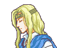

Support Rank C

戦いに傷ついた 心をいやす調べ・・・
よろしければ１曲いかがですかA melody to heal a heart wounded by battle... if you'd like, how about a song?

あなたは確か・・・いつも
ロイ将軍の側にいる吟遊詩人ですねYou're, if I recall... the bard who's always at General Roy's side, aren't you?
はい
エルフィンといいますYes, I'm called Elffin.
・・・エルフィンさん
あなたは その もしかしたら・・・...Mister Elffin, are you, perhaps, by any chance...
いや そんなはずはない
分かっているのに・・・すみませんNo, that can't be. I know that, and yet... I'm sorry.
・・・いえ...No.
私は あなたの知る どなたかに
よく似ている・・・そうでしょう？I resemble someone you know very well... isn't that so?
！ まさか・・・! Surely not...
・・こうして目の前で話していても
信じてもらえないのか・・・...Even talking to you face to face like this, you still can't believe it...
私は自分で思っているほど
臣下に信用がないのかな？ クレインI wonder if I have less trust among my subjects than I thought, Klein.
ミルディン王子っ！Prince Mildain!
やはり
ミルディン王子なのですね！So it really is you, Prince Mildain!
ああっ 本当に・・・
よくぞ よくぞご無事で・・・！Ahh, truly... thank goodness, thank goodness you're safe...!
クレイン
少し見ぬ間に 立派になったなKlein, you've grown quite fine in the short time I haven't seen you.
王子が おられなくなってから
１年と少し・・・It's been a little over a year since you disappeared, my prince...
エトルリア王国は
様変わりしてしまいましたThe Kingdom of Etruria has completely changed.
知っている
苦労をかけたなI know. I've caused you trouble.
私は 西方三島に駐留して
いましたから そこまでは・・・I was stationed in the Western Isles, so I didn't know the full extent of it...
・・・本当に・・・ご無事で・・・...Truly... thank goodness you're safe...
きっと エトルリアの民すべてが
あなたのお戻りに 歓喜するでしょうねI'm sure every citizen of Etruria will rejoice at your return.
・・・・・・......
Support Rank B
ミル・・・いえ
エルフィン様！Mil— no, Lord Elffin!
こちらに おられましたかSo you were here.
・・・クレイン将軍
少しこちらへ...General Klein, come here a moment.
？ はい
なんでしょうか? Yes, what is it?
・・・「様」..."Lord."
さま？ 「様」とは？"Lord"? What about "Lord"?
・・・自覚がないのか
困ったものだ...You really have no idea, do you. That's a problem.
・・・・・・
私が なにか・・・？......Did I do something...?
・・・人がきたな
また 日をあらためて...Someone's coming. We'll continue this another day.
・・・？...?
Support Rank A
・・・ここなら邪魔が
はいらないだろう...No one should interrupt us here.
ミ・・・ エルフィン様
折り入ってお話とは？Mi— Lord Elffin, you said you had something important to discuss?
やはりエトルリアの・・・Is it about Etruria after all...?
そうではない
この間の話の続きを・・・No, that's not it. The rest of what I was saying the other day...
あ はい
「さま」・・・ですか？Ah, yes. About "Lord"...?
・・・エトルリア貴族が
吟遊詩人を相手に「様」づけは...An Etrurian noble attaching "Lord" to a mere bard —
不自然だと思わないか？don't you think that's unnatural?
あ・・・！ そうですね
もうしわけありません！！Ah...! You're right, I'm terribly sorry!!
それでは エルフィンさん・・・
とお呼びしますThen I'll call you Mister Elffin, in that case.
呼び捨てでかまわないPlain Elffin is fine, no title needed.
だめです！No, I can't!
いかに姿をかくされていても
たとえ かりそめの名であってもNo matter how you're hiding who you are, even under a borrowed name,
王子を呼び捨てになど
私には できませんI could never address a prince without an honorific.
フフッ・・・
・・・昔から 変わらないなHeh... you haven't changed since back then, have you.
え？Huh?
幼いころからEver since you were little,
クレインは 父リグレ公にともなわれ
よく王宮に来ていただろうyou often came to the palace with your father, Duke Rigle, didn't you?
はい ものごころが
ついたときには・・・Yes, for as long as I can remember...
兄弟のいない私は
よちよち歩きのおまえが可愛くてI had no siblings, so you toddling around was so adorable to me,
・・・私もまだ若かったからね
リグレ公にこう言ったんだ...and I was still young too, so I said this to Duke Rigle:
「本日より わが弟とするから
アクレイア王宮に住まわせるように」と"From this day on, he shall be my little brother, so have him live at the Akureia Palace."
！ 王子が？ そんなことを
おっしゃったのですか？! You, my prince? You said such a thing?
われながら
むちゃなことを言ったEven I'll admit, that was a reckless thing to say.
さすがに顔を青くするリグレ公の
横で おまえが・・・Duke Rigle's face went pale, understandably, and right beside him, you...
私が・・・I...
おまえが 私を見ながら言った言葉は
やはり「だめです」だったよwhat you said, looking right at me, was "No, I can't."
・・・覚えていません...I don't remember that.
「ぼくは おうじの『きし』に
なるから だめです」"I'm going to become the prince's knight, so no, I can't."
一言とたがえず
このとおりだったよWord for word, exactly like that.
「『おとうと』はちがう人に
してください！」とも言ったなYou also said, "Please make someone else your little brother!"
・・・な なんて
失礼なことを・・・...Wh-what a rude thing to say...
子供の頃のこととはいえ
も 申し訳ありません・・・Even if it was something I said as a child, I'm terribly sorry...
気にしなくていいNo need to worry about it.
おまえの その変わらないところは
私にとって救いになるよThat part of you that hasn't changed is a comfort to me.
・・・死のふちから戻ってきたとき...When I came back from the brink of death,
世界はそれまでと まるで
別のものに見えた・・・the world looked like an entirely different place than before...
しかし 本当は何も・・・
変わってはいないのかもしれないなBut perhaps, in truth, nothing has really... changed after all.
ミルディン王子・・・Prince Mildain...